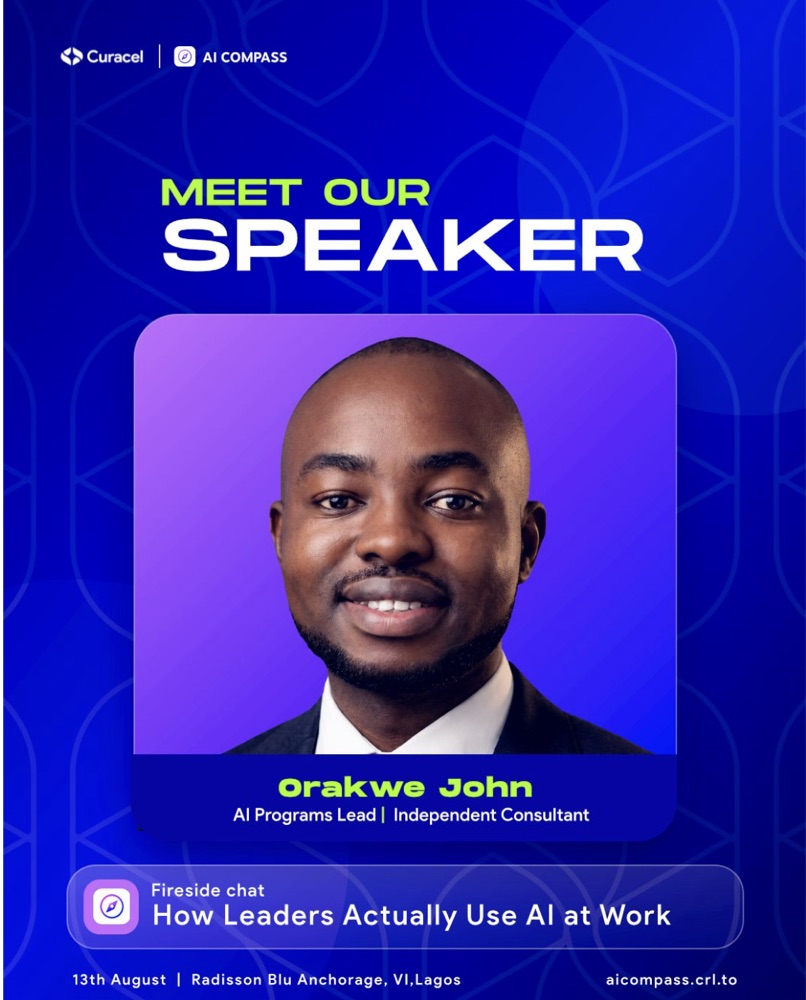
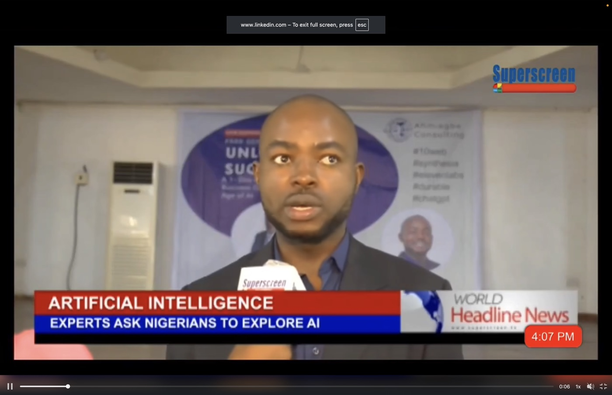

AI Opportunity Audit
A two-to-three-week diagnostic that maps how work really gets done and ranks where AI recovers the most hours.
- Hours recoverable ranked by role
- Cost to capture sized honestly
- Sequence for the next 90 days
I help central banks, ministries and banks turn AI licences into hours saved, with programmes built on the 10-20-70 principle.
Built for leaders in
Every engagement is scoped around hours returned to your people, not course completions.
A two-to-three-week diagnostic that maps how work really gets done and ranks where AI recovers the most hours.
Board and executive sessions that cut through hype: what AI can do, what it risks, what to decide this quarter.
Hands-on training in the licensed tools your staff already pay for, applied to real tasks.
Multi-month programmes that move an institution from Level 1 Awareness to Level 5 Transformative AI.
Govern it, secure it, then scale it. Policy, ethics and cybersecurity for regulated teams.
Six moves to find idle licences and turn spend into measurable productivity.
Conference keynotes, fireside chats and panels, plus an ongoing advisory seat for leadership teams.
Transformation is 10% algorithms, 20% technology and data, and 70% people and process. That is why every programme starts with the work, not the software.
Algorithms
Tech & data
People & processRedesign the job, train the supervisors, verify what the machine generates.
A 30-minute discovery call to understand your goals, tools and constraints.
The AI Opportunity Audit ranks hours recoverable and shapes the programme.
Workshops and adoption programmes, tracked in hours returned to your people.
A repeatable path from awareness to measurable transformation.
Job Decomposition breaks roles into tasks so automation targets the right ones.
Redesign workflows around people who supervise the machines.
Generation-then-Comprehension keeps judgement with the human.
Controls first. Then one human, the right number of agents.
Every programme is designed to move your institution up one level at a time, and to measure it in hours returned.
Fireside chats, panels and television appearances on how leaders actually use AI at work.


Curacel AI Compass · Radisson Blu Anchorage, Victoria Island, Lagos · 13 August.
Book Orakwe to speakhours saved for clients before 2028.
AI is not the villain and not the saviour. It is a multiplier of the discipline you already have.Orakwe John, MBA
Book a 30-minute discovery conversation. You leave with a clear view of where AI pays back first in your institution.